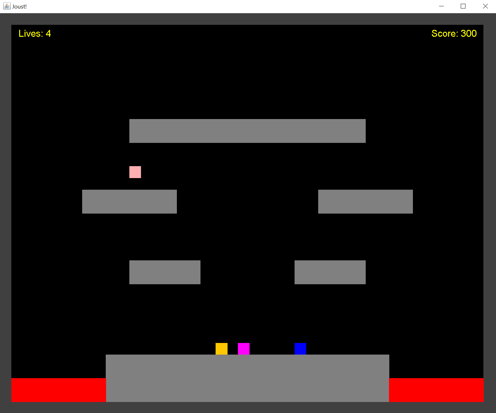

-Designed and implemented a complex data structure showcasing an in-depth understanding of its theoretical foundations
-Developed highly effective algorithms through meticulous pre-implementation planning
-Engaged in collaborative teamwork, contributing insights and participating in discussions
Joust - Arcade Game | Java
Winter 2023

-Implemented polymorphic design principles to create a dynamic and extensible game architecture
-Leveraged a keen eye for detail in reviewing fellow team members’ code, ensuring adherence to coding standards
-Engaged in dynamic pair-programming sessions, collaborated closely with team members to elevate code quality, exchange ideas, and overcome challenges together
Hangman Game | Python
Fall 2022
-Applied proficient coding skills in Python to implement the core mechanics of the Hangman game
-Contributed to refining the user interface and overall gameplay experience, demonstrating a keen eye for detail and user-center design approach
-Faced and resolved coding challenges as a team, refining my debugging skills